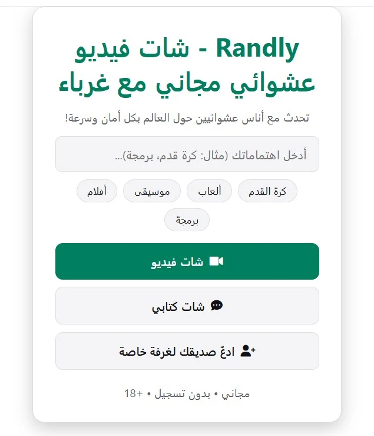

آخر تحديث: أكتوبر 2026
أُغلق Omegle في نوفمبر 2023، فوجد ملايين الأشخاص أنفسهم فجأة بلا وسيلتهم المفضلة للتعرف على غرباء عبر الإنترنت. ومنذ ذلك الحين ظهرت عشرات "بدائل Omegle"، وبصراحة هي ليست متساوية. بعضها مليء بالإعلانات، وبعضها بلا أي إشراف، وبعضها يجبرك على إنشاء حساب قبل أن تقول "مرحباً".
يشرح هذا الدليل ما يهم فعلاً عند اختيار موقع شات عشوائي في 2026، وما يجب تجنبه، وأين يقف Randly بين هذه المواقع. سواء كنت تريد ممارسة لغة، أو تكوين صديق من بلد آخر، أو قضاء عشر دقائق ممتعة، ستعرف في النهاية ما الذي يجب أن تبحث عنه.
لسنوات طويلة كان Omegle المكان الافتراضي للقاء أشخاص عشوائيين على الإنترنت. تفتح الموقع، وتضغط زراً، وخلال ثوانٍ تتحدث مع شخص غريب، كتابةً أو بالفيديو. كان بسيطاً، وهذه البساطة هي ما جعلته ضخماً.
أُغلق الموقع نهائياً في نوفمبر 2023. ومنذ ذلك الحين استعارت مواقع كثيرة اسمه أو قلّدت شكله. من المهم أن تفهم أن أياً منها ليس Omegle الأصلي. بعضها مواقع شات عشوائي لا بأس بها، وبعضها نسخ هدفها الأساسي عرض الإعلانات. ولهذا من المفيد أن تتفحص الموقع جيداً قبل أن تقضي وقتك فيه.
أي بديل جيد يجب أن يحافظ على هذه الروح، مع إصلاح ما أخطأ فيه Omegle: ضعف الإشراف وضعف الأمان.
مواقع كثيرة تقول "مجاني" لكنها تقفل ميزات أساسية، مثل اختيار الدولة، خلف خطة مدفوعة. وأخرى تتركك تجرّب الموقع دقيقة ثم تطلب منك التسجيل. شاشات التسجيل من أشهر الأسباب التي تجعل الناس يغادرون مواقع الشات العشوائي، لأن الهدف كله هو بدء الحديث بسرعة.
قبل أن تستثمر وقتك، تحقق من ثلاثة أمور: هل تستطيع الشات كضيف؟ وهل الفلاتر مجانية؟ وهل يدفعك الموقع نحو خطة مدفوعة؟
ابحث عن زر إبلاغ، وحظر مؤقت تلقائي للمخالفين المتكررين، وقاعدة 18+ واضحة. الموقع بلا إشراف موقع يجب أن تغادره. الإشراف الجيد لا يجعل الموقع آمناً تماماً، لكنه يدل على أن القائمين عليه يهتمون بالتجربة.
تحقق أيضاً مما إذا كان الموقع يخبرك بما يحدث لمحادثاتك. الموقع الذي لا يحفظ محادثاتك أفضل لخصوصيتك من موقع يحتفظ بها.
معظم الناس يتحدثون الآن من هواتفهم. لا يجب أن تحتاج إلى تحميل تطبيق لمجرد تجربة موقع. النسخة الجيدة تعمل مباشرة في متصفح الموبايل، فتبدأ خلال ثوانٍ وتغلق الصفحة حين تنتهي. التطبيقات لا بأس بها لمن يحبها، لكنها يجب أن تكون اختيارية لا إجبارية.
العشوائية المطلقة ممتعة لبضع دقائق، ثم تصبح مرهقة. تتخطى وتتخطى ولا تجد محادثة جيدة. ميزتان تحلان هذه المشكلة:
إذا كنت تريد ممارسة الإنجليزية أو الإسبانية أو العربية، أو تقابل ناساً من بلدان أخرى، فالترجمة المدمجة تجعل المحادثات أسهل بكثير. بدون ترجمة، محادثتك مع شخص يتحدث لغة مختلفة تنتهي عادة بعد "مرحباً". ومعها تستطيع أن تجري حديثاً حقيقياً.
ليست كل البدائل تعمل بالطريقة نفسها. هذه الأنواع الشائعة التي ستصادفها، مع مميزات كل نوع وعيوبه:
لا يوجد نوع جيد أو سيئ تلقائياً. الاختيار المناسب يعتمد على ما تريده. لكن إذا كنت تريد أقرب تجربة للأصل، فأفضل خيار موقع متصفح مجاني بالكامل وبإشراف معقول.
Randly موقع شات فيديو وشات كتابي عشوائي مجاني، مبني حول هذه النقاط الخمس:

بنينا Randly لأن شاشات التسجيل مزعجة. تفتح الموقع وتؤكد أنك بلغت 18 عاماً أو أكثر وتدخل. لا حساب، ولا تطبيق للتحميل، ولا خطة مدفوعة تخفي الميزات المفيدة. اختيار الدولة والترجمة الفورية، اللذان تفرض عليهما مواقع كثيرة أخرى مقابلاً، مجانيان هنا.
هذه هي العملية كلها. بدون بريد إلكتروني، وبدون كلمة مرور، وبدون انتظار.
تخيّل أنك من مصر وتريد التحدث مع شخص من تركيا. على Randly تستطيع اختيار تركيا كدولة، ومع تفعيل الترجمة الفورية تقرأ المحادثة بالعربية بينما يقرأها الطرف الآخر بالتركية. تغطي الترجمة 12 لغة، فهي تعمل مع كثير من التركيبات الأخرى. وهي أيضاً طريقة طبيعية جداً لممارسة لغة، لأنك تتحدث مع أشخاص حقيقيين عن أمور حقيقية.
الشات العشوائي ممتع، لكنه أيضاً مكان تقابل فيه غرباء، وبعض العادات البسيطة تفيدك كثيراً:
هل هناك عودة رسمية لـ Omegle؟
أُغلق Omegle نهائياً في 2023. أي موقع يستخدم الاسم اليوم ليس الخدمة الأصلية.
هل بدائل Omegle آمنة؟
هذا يختلف من موقع لآخر. اختر موقعاً فيه إبلاغ وحظر وقواعد واضحة، وحافظ دائماً على بياناتك الشخصية.
ما هو أفضل بديل لـ Omegle بدون تسجيل؟
يتيح لك Randly بدء شات فيديو أو شات كتابي بضغطة واحدة ودون إنشاء حساب.
هل يمكنني استخدام الشات العشوائي من الموبايل؟
نعم. يعمل Randly مباشرة من متصفح الموبايل دون تحميل أي تطبيق.
هل اختيار الدولة مجاني؟
نعم، على Randly اختيار الدولة والترجمة الفورية مجانيان. كثير من المواقع الأخرى تفرض مقابلاً عليهما، فتأكد قبل أن تعتمد على أي فلتر.
هل يمكنني تعلّم لغة من خلال مواقع الشات العشوائي؟
نعم. اختيار دولة معينة مع تفعيل الترجمة الفورية طريقة جيدة للحديث مع ناطقين أصليين وممارسة اللغة بشكل طبيعي.
من المسموح له باستخدام Randly؟
فقط من بلغ 18 عاماً أو أكثر. تطلب الشاشة الأولى تأكيد عمرك قبل الدخول.
أفضل بديل لـ Omegle هو الذي يحافظ على الإحساس البسيط والعفوي للأصل ويأخذ الأمان بجدية. ابحث عن موقع مجاني، لا يتطلب تسجيلاً، ويعمل على هاتفك، ويتيح لك اختيار من تتحدث معه، وفيه إشراف حقيقي.
جرّب Randly وقارن بنفسك. ويمكنك أيضاً قراءة دليلنا عن شات الفيديو العشوائي المجاني بدون تسجيل.